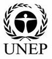
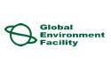
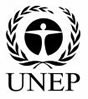
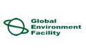

2010/2 Marine Katoomba Meeting XVI (Palo Alto, California, USA)

OVERVIEW
The oceans provide a great many critical but undervalued ecosystem services that are nearing thresholds for healthy functioning, putting coastal populations ever more at risk. Given the failure of many conventional management measures and the insufficient resources available for effective management, the time is ripe for the development of new market-based tools.This first-ever Marine Katoomba Meeting capitalizes on ever-expanding interest in finding innovative solutions to conserve our valuable marine ecosystem services.
The event focused around three core objectives:
- Catalyze the building of a global community of practice to support payment for ecosystem services (PES) and other innovative financing mechanisms for marine and coastal conservation, as well as regional networks for information exchange and sharing of lessons learned;
- Create a strategy to reach consensus on a “blueprint for action” to guide future marine PES, offsets, and other market-based solutions to marine conservation problems;
- Lay the groundwork for designing and launching a network of demonstration PES projects in marine and coastal environments; and
- Present meeting outputs at future national and international oceans conferences, such as the Fifth Global Conference on Oceans, Coasts, and Islands.
More information can be found on the Katoomba Group at this link.
KEY DOCUMENTS
Ecosystem Marketplace Insight Booklets - A collection of articles compiled and prepared for the event.
|
Paying Poseidon: Financing the Protection of Valuable Ecosystem Services Ecosystem Marketplace, 2010 |
|
|
AGENDA
DAY 1: February 9
Objective: To lay out the concepts on marine ecosystem services and market-based conservation mechanisms, e.g., experiences and ideas, lessons learned and best practices, particularly in the fisheries and water sectors.
| Time | Description | |
|---|---|---|
|
8:00 – 8:45 am |
REGISTRATION | |
|
8:45 – 9:15 am |
WELCOME Michael Jenkins, President & CEO, Forest Trends  Steve McCormick, President, Moore Foundation Amber Mace, Assistant Secretary for Coastal Matters, California Natural Resources Agency and Executive Director, California Ocean Protection Council |
|
|
9:15 – 10:15 am |
OPENING Katoomba Dialogue – Environmental Markets and PES: Bridges that Span New Terrain in Marine and Coastal Ecosystem Services The enormous value of ecosystem services is generating much attention. The public, decision-makers, and the business community are beginning to understand why protecting the habitats that provide those services benefits not only local communities and national economies, but also private sector investors. Panelists:Ricardo Bayon, EKO Asset Management Partners |
|
|
10:15 – 10:30 am |
Innovative Financing with the Greatest Potential – the Foci of the MARES Initiative Winnie Lau, MARES Program, Forest Trends A myriad of emerging marine markets and market-like mechanisms exist to enhance conservation and create business opportunities for investors. The MARES Program of Forest Trends has been at the forefront of these new initiatives, focusing on the development of the first Marine Katoomba event to launch a new community of practice around marine markets. |
|
|
10:30 – 11:00 am |
COFFEE BREAK | |
|
11:00 – 11:30 am |
USING SCIENCE TO UNCOVER THE IMMENSE VALUE OF MARINE ECOSYSTEM SERVICES Mary Ruckelshaus, NOAA & Natural Capital Project Marine systems provide multiple high-value services. We investigate different sectors and the ecosystem services that support them, and the role of PES can play in minimizing risk and clarifying jurisdictions, rights, and responsibilities in the protection of key ecosystem services. |
|
|
11:30 – 12:45 pm |
FRESHWATER-TO-SALTWATER-TO-SEAFOOD QUALITY MARKETS Maximizing the Success of Market Tools in Ensuring Clean Water Linda Sheehan, California Coastkeeper Alliance Developing a Water Fund to Conserve Watersheds in the Andes Alejandro Calvache, The Nature Conservancy Water Quality for Corporate Welfare: Coastal and Marine Resource Dependence on Clean Water Al Appleton, former New York City Department of Environmental Protection Commissioner Integrated Watershed and Coastal Management: Tribal Parks Eli Enns, Tla-o-qui-aht First Nations, British Columbia, Canada |
|
|
12:45 –1:45 pm |
LUNCH | |
|
1:45 – 3:00 pm |
ENGAGING WITH THE TOURISM SECTOR IN PROTECTION OF MARINE BIODIVERSITYS Protecting Shorelines and Beaches: Natural Coastal Infrastructure for the Sun, Sand, and Beach Tourism Industry Lauretta Burke, World Resources Institute Integrated Management across Landscapes and Seascapes is the Key to Protecting Services Peter Mumby, University of Exeter Beyond Simply Ecotourism: Minimizing Risk and Enhancing Value Rick MacPherson, Coral Reef Alliance The Private Marine Park Model for Maintaining Healthy Coral Reefs for High-Value Tourism Sibylle Riedmiller, Chumbe Island Coral Park, Inc., Tanzania |
|
|
3:00 – 4:15 pm |
OFFSHORE DEVELOPMENT: IMPLICATIONS FOR BUSINESS, COMMUNITIES AND GOVERNMENT Developing and Harvesting Marine Energy Sustainably Tina Taylor, Electric Power Research Institute Using Marine Spatial Planning to Protect our Oceans and Foster Smart Renewable Energy Development Seth Kaplan, Conservation Law Foundation Sustainably Managing the Twin Marine Resources of Fish and Offshore Wind Energy Daniel Cohen, Fishermen’s Energy Offshore Resource Development for People, Environment, and Business Odigha Odigha, Government of Cross River State, Nigeria |
|
|
4:15 – 4:45 pm |
BREAK | |
|
4:45 – 6:00 pm |
NEW DIRECTIONS IN FISHERIES MARKETS FOR SUSTAINABLE HARVESTING Marine Fisheries Quota Markets Jim Sanchirico, University of California, Davis Curbing Unsustainable By-Catch Practices: Case Study of the Alaskan By-Catch Cap-and-Trade Market Joe Plesha, Trident Seafoods The Importance of Collaboration among Stakeholders in Sustainable Fisheries Alejandro Robles, Noroeste Sustentable Sustainable AquacultureJose Villalon, World Wildlife Fund |
|
|
6:00 – 6:45 pm |
MOVING FORWARD IN FORGING NEW MARKET-BASED APPROACHES AND TOOLS IN CONSERVING MARINE AND COASTAL RESOURCES Judy Kildow, The National Ocean Economics Program |
|
|
7:00 – 9:00 pm |
EVENING RECEPTION Keynote Speakers: Martha Isabel (Pati) Ruiz Corzo, Sierra Gorda Biosphere Reserve, Mexico Larry Collins, San Francisco Crab Boat Owners Association |
|
DAY 2: February 10Objective: Looking ahead at the new framing on coastal and marine resource use, management, and policies that the ecosystem services paradigm has already begun stimulating. |
||
| Time | Description | |
|
9:00 – 9:15 am |
WELCOME AND REVIEW OF GOALS FOR THE DAY Michael Jenkins, Forest Trends |
|
|
9:15 – 10:00 am |
KEYNOTE PRESENTATION The Role of Community and Other Institutions in Providing Innovative Solutions for Marine and Coastal Conservation Bonnie McCay, Rutgers University Community and other institutions, both formal and informal, play a critical role in setting the stage for development of marine markets and market-like mechanisms. But communities can also be at risk from private sector investment, if issues of equity, access, common property, and governance are not well understood and appreciated |
|
|
10:00 –10:30 am |
BREAK | |
|
10:30 – 12:00 pm |
PANEL PRESENTATION Solving Open Access Issues in Marine and Coastal Resource UtilizationGovernment policies can steer use so it is sustainable, even in the open access domain of oceans. While some policies can also drive marine market development, the spectrum of market mechanisms can also positively influence government policies. The use of marine protected areas, marine spatial planning, and community-based management have all been used to protect ecosystem services and secure the sustainability of financing for conservation. Moderator -- Indumathie Hewawasam, Marine Policy SpecialistHow the National Biodiversity Law Supports the Development of Marine and Coastal PES Huynh Thi Mai, Ministry of Natural Resources and Environment, Vietnam Implications of Marine Spatial Planning – the View from MassachusettsStephanie Moura, Massachusetts Ocean Partnership Lessons Learned from Mexico’s National Terrestrial PES Law for Developing Marine PES Law Carlos Muñoz Piña, National Institute of Ecology, Mexico Limited Access Areas and Regional Sustainable Tourism Development in the Red Sea Amr Ali, Hurghada Environmental Protection and Conservation Association, Egypt Harnessing Use Rights and Access Rights under Marine Protected Areas for Marine and Coastal PES in Kenya Nyawira Muthiga, Wildlife Conservation Society |
|
|
12:00 – 1:00 pm |
LUNCH | |
|
1:00 – 2:15 pm |
THE ROLE OF CIVIL SOCIETY IN CATALYZING MARKET-BASED MARINE CONSERVATION Moderator -- Dan Suman, University of Miami Developing a Marine Fund for Marine Conservation Astrid Scholz, Ecotrust Multi-stakeholder Public-Private Collaboration to Move PES Agenda Forward in the Philippines Rina Rosales, Resources, Environment and Economics Center for Studies, Inc., Philippines Toward a Legal Framework for Integrated Stakeholder Rights to Marine and Coastal Ecosystems Andrea Saenz-Arroyo, Comunidad y Biodiversidad A.C., Mexico Development of Market-based Conservation Initiatives in Mexico |
|
|
2:15 -- 2:30 pm |
INSIGHTS FROM COPENHAGEN AND THE ROAD FORWARD FOR OCEANS, COASTS, AND CLIMATES Andreas Merkl, ClimateWorks |
|
|
2:30 – 3:45 pm |
BLUE CARBON: EXTENDING TERRESTRIAL CARBON MARKETS TO COVER MARINE AND COASTAL CARBON POOLS Preserving forests and reducing deforestation have been thought to be keys to combating the impacts of climate change. However, recent research shows that the oceans and coastal ecosystems can store comparable if not greater amounts of carbon than forests. It is time to include coastal and marine carbon pools in the carbon market dialogs. Moderator -- Robert Repetto, United Nations Foundation & Clean Air-Cool PlanetBlue Carbon: Carbon Accounting in Marine and Coastal Environments Richard Kenchington, United Nations Environment Programme Integrated Green and Blue Carbon Management : How to make it work Joerg Seifert-Granzin, Katoomba Group Developing Methodologies for Mangrove Carbon Assessment Walter Vergara, World Bank The Nuts and Bolts of Carbon Markets and How to Incorporate Blue Carbon into the Market Marc Stuart, EcoSecurities |
|
|
3:45 – 4:15 pm |
COFFEE BREAK | |
|
4:15 – 5:45 pm |
THE ROLE OF PRIVATE SECTOR IN FORGING MARINE ECOSYSTEM SERVICES MARKETS Governments, academia, and NGOs all play a role in crafting solutions to the loss of ecosystem services, and along with communities and the private sector, can help a shape a future in which ecosystem services are not just protected, but are the basis for profitable investing. Moderator -- Marea Hatziolas, The World BankThe Role of Insurance in Protecting Marine and Coastal Ecosystems Adam Cole, California Department of Insurance What One Insurer is Doing to Manage Climate Risk Stephen Bushnell, Fireman’s Fund Insurance Company Private Sector Leadership and Collaboration in Sustaining Marine Ecosystem Services Paul Holthus, World Ocean Council Employing Market-based Mechanisms Towards Sustainable Fisheries Jim Cannon, Sustainable Fisheries Partnership Creating the Right Conditions for Private Sector Investment Bettina von Hagen, Ecotrust |
|
|
5:45 – 6:30 pm |
MEETING WRAP UP Tundi Agardy, MARES Program, Forest Trends |
|
CO-HOSTS


SPONSORS & PARTNERS
  
 